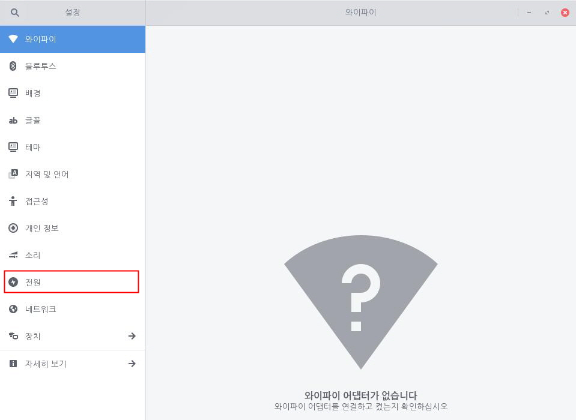
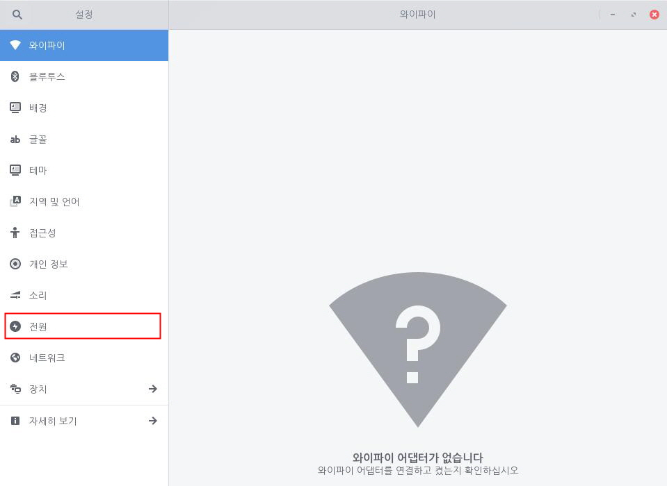

사용자 화면이 절전 모드에 들어간 이후 자동 잠금이 되도록 설정합니다. "흰 원"을 오른쪽으로 옮겨 자동 화면 잠금을 설정할 수 있습니다. 화면이 절전 모드에 들어간 이후 곧바로 자동 잠금이 되거나, 자동 잠금이 되는 시간을 최소 30초 부터 최대 1시간까지 설정할 수 있습니다. 사용자 화면 잠금 시간은 아래 단계를 진행하여 설정할 수 있습니다.1. 좌측 하단의 [시작]아이콘을 클릭하고 검색 창에 "설정"을 입력한 후 [설정] 애플리케이션을 실행합니다.
 2. [설정] 애플리케이션 사이드 바에서 [전원]을 클릭합니다.
2. [설정] 애플리케이션 사이드 바에서 [전원]을 클릭합니다.
 3.자동 화면 잠금 옆 "흰 원"을 오른쪽으로 옮겨 화면 잠금을 설정할 수 있습니다. 화면 잠금 설정 이후 절전 모드 이후 화면 잠그기에서 시간을 설정할 수 있습니다. 자동 잠금이 되는 시간을 최소 30초 부터 최대 1시간까지 설정할 수 있습니다.
3.자동 화면 잠금 옆 "흰 원"을 오른쪽으로 옮겨 화면 잠금을 설정할 수 있습니다. 화면 잠금 설정 이후 절전 모드 이후 화면 잠그기에서 시간을 설정할 수 있습니다. 자동 잠금이 되는 시간을 최소 30초 부터 최대 1시간까지 설정할 수 있습니다.